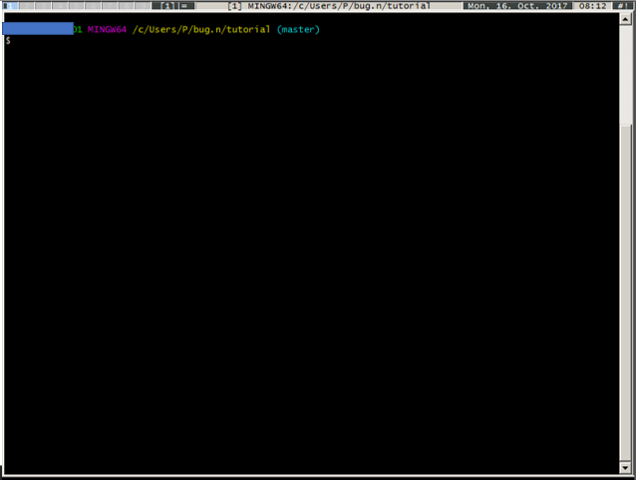
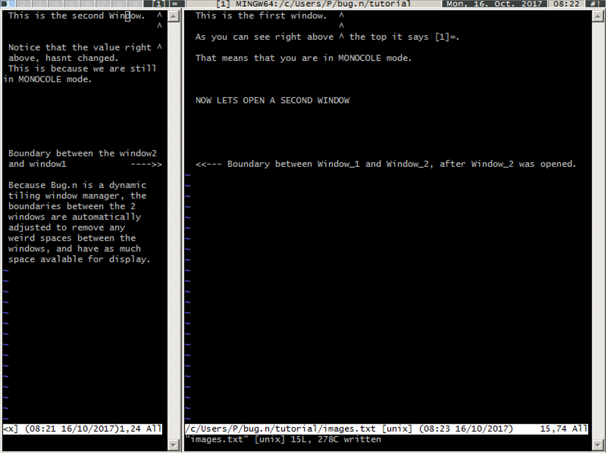
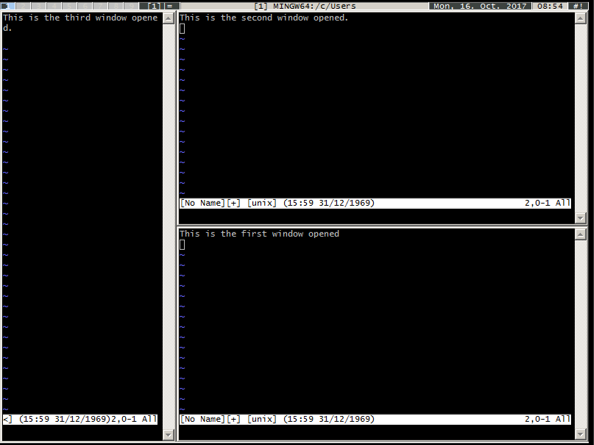
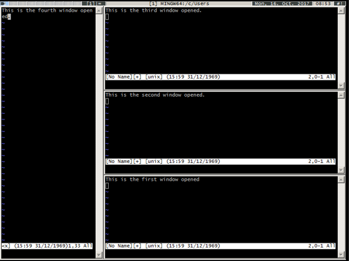
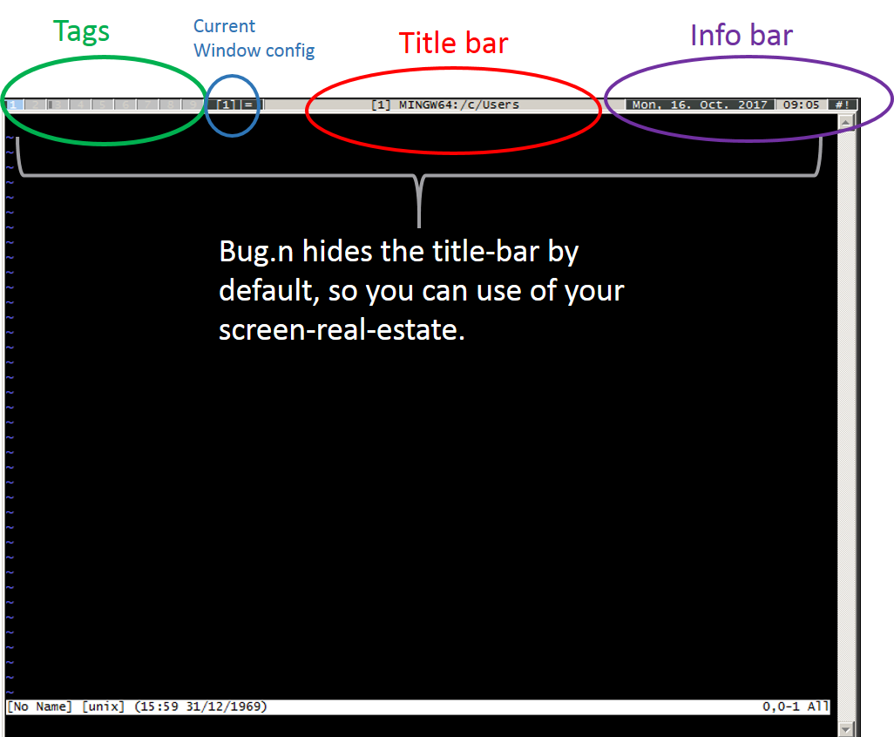

bug.n dwm - dynamic window manager
https://github.com/alphaCTzo7G/bug.n/blob/master/tutorial/tutorial.html
bug.n dwm - dynamic window manager
https://github.com/alphaCTzo7G/bug.n/blob/master/tutorial/tutorial.html
Instructions for launching bug.n can be found here Installation
Using bug.n can be done in pure keyboard control or through some extra mouse handling. See the Default_hotkeys for what are the default bindings. They are used in this tutorial.
For this tutorial, we will use git-bash (https://git-for-windows.github.io/), since the target audience is programmers and most programmers are already very familiar with VIM and git. Git bash comes with VIM installed, so you can try it out for yourself. Further a lot of use work with terminals and lots of them, and it directly shows a use case which will be helpful to a lot of us. Start bug.n by executing the bug.n exe file, and then launch git bash. It will look something like this:

Now lets open VIM installed in git bash in the git-bash window, as we will use that for demonstration of the windowing capabilities.

Lets open a second Window (Window_2) and see what happens

Existing windows are pushed upon a stack to the right of the screen. We will come back to the meaning of stack, and master later. For now just assume that the Window on the Right is Master and the Window on the left is stack If you open more windows, the newest window will become the master. The previous windows will be put on the stack. As a result, in this current configuration, you will have only 1 large master Window, and several smaller windows in stack, looking something like this Two Windows opened:Three Windows opened:

Four Windows opened:
1. Tags: Tags are like Virtual desktop, and each tag can hold multiple windows together.
2. Current Window Config: This displays the current configuration (Monocole). Bug.n has a number of other modes, that we will discuss in upcoming tutorials.
3. Title Bar: This displays the name of the application, as well as the name of the current file.
4. Info Bar: displays the time, and date.

To reset bug.n cleanly:
[Win]+[Cntrl]+[r]To quit bug.n cleanly:
[Win]+[Cntrl]+[q]